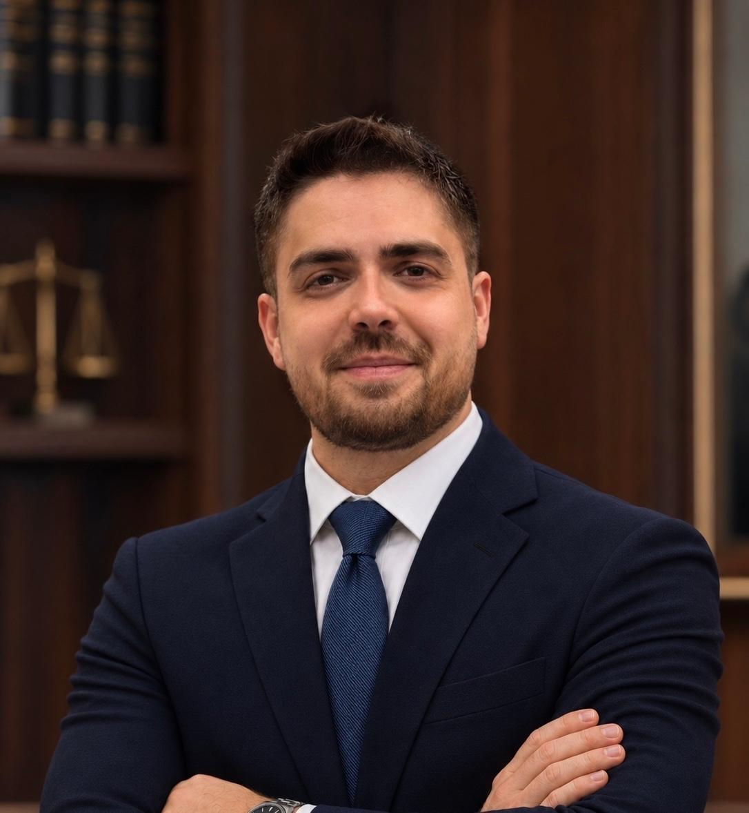

Bireysel hukuki süreçler
İşçilik alacakları, iş sözleşmeleri, ceza soruşturma ve kovuşturmaları, icra takipleri ve hak arama yolları.
Geleneksel hukuk disiplinleri ile teknoloji ve iş dünyasının değişen hukuki ihtiyaçlarını bir araya getiren; analitik değerlendirme, titiz hazırlık ve sürdürülebilir hukuki yaklaşım.

Selçuk Üniversitesi Hukuk Fakültesi mezunu Av. Enes Özdemir, kamu hukuku alanındaki lisansüstü akademik çalışmalarıyla hukuk disiplininin teorik boyutunu uygulama perspektifiyle birlikte ele almaktadır.
Çalışma alanları; iş hukuku, ceza hukuku, ticaret ve şirketler hukuku, icra ve iflas hukuku, fikri ve sınai mülkiyet, marka ve patent süreçleri, bilişim ve yapay zekâ hukuku ile startup ve yatırım işlemlerini kapsamaktadır.
Bireysel başvurulardan şirketlerin süreklilik arz eden danışmanlık ihtiyaçlarına kadar uzanan farklı hukuki meselelerde; sözleşme, uyum, dava ve takip süreçlerini birbirini tamamlayan boyutlarıyla değerlendirir. Çalışmalarında ticari ilişkilerin hukuki altyapısı, teknoloji odaklı iş modelleri ve uyuşmazlıkların önleyici yönetimi öne çıkar.
Aşağıdaki çalışma alanlarını seçerek ilgili hukuki işlemler ve değerlendirme konuları hakkında ayrıntılı bilgi alabilirsiniz.
Bireysel uyuşmazlıklardan şirketlerin ticari ve teknolojik süreçlerine uzanan çalışma kapsamı, her dosyanın niteliğine göre şekillenen hukuki değerlendirmeyi esas alır.
İşçilik alacakları, iş sözleşmeleri, ceza soruşturma ve kovuşturmaları, icra takipleri ve hak arama yolları.
Şirket içi karar ve işlemler, ortaklık ilişkileri, ticari sözleşmeler, alacak yönetimi ve süreklilik arz eden hukuki danışmanlık.
Şirketleşme, yatırım turu dokümantasyonu, pay sahipleri sözleşmeleri, cap-table yapısı, pay devri ve kurumsal yönetim.
KVKK, veri işleme süreçleri, yapay zekâ uygulamaları, yazılım ve SaaS sözleşmeleri, dijital platformların uyum ihtiyaçları.
Marka tescil başvuruları ve itirazları, patent ve tasarım süreçlerinin hukuki boyutu, telif, lisans, devir ve hak ihlali uyuşmazlıkları.
İlamlı ve ilamsız icra, itirazın iptali ve kaldırılması, haciz, tahsilat, borç yapılandırma ve ilgili yargısal süreçler.
Bu bölüm, çalışma kapsamını tanıtır; belirli bir müvekkil sayısı, geçmiş iş hacmi veya sonuç garantisi beyanı değildir.
“Her hukuki mesele, yalnızca mevzuatın değil; olayın, ticari gerçekliğin ve gelecekte doğabilecek sonuçların da birlikte değerlendirilmesini gerektirir.”AV. ENES ÖZDEMİR
Hukuki meselelerin sistematik biçimde ele alınmasına yönelik çalışma aşamaları.
Olayın, belgelerin, ilgili mevzuatın ve olası hukuki yolların somut durum özelinde incelenmesi.
Uyuşmazlığın veya işlemin niteliğine göre seçeneklerin, sürelerin ve hukuki risklerin değerlendirilmesi.
Sözleşme hazırlığı, hukuki yazışmalar, dava ve takip süreçleri ile gerekli başvuruların yürütülmesi.
Hukuki makaleler, güncel mevzuat değerlendirmeleri ve akademik incelemeler. Yeni yayımlanan çalışmalar bu bölümde listelenir.
Henüz yayımlanmış makale bulunmuyor. Yeni makaleler yayımlandığında burada görüntülenecektir.
Konunun türüne göre sözleşmeler, tebligatlar, yazışmalar, ödeme belgeleri ve uyuşmazlıkla ilgili diğer kayıtlar incelenebilir. Görüşme öncesinde hangi belgelerin gerektiği ayrıca belirlenir.
Ticari sözleşmeler, şirket içi karar ve işlemler, iş ilişkileri, veri koruma, fikri mülkiyet ve uyuşmazlıkların önleyici değerlendirmesi gibi alanlar ihtiyaçlara göre ele alınabilir.
Hayır. Marka, mal veya hizmetleri ayırt eden işaretlerle; patent ise belirli koşulları taşıyan teknik buluşlarla ilgilidir. Başvuru ve koruma rejimleri farklıdır.
Kişisel verilerin korunması, veri setlerinin hukuka uygun kullanımı, fikri mülkiyet, sözleşmesel sorumluluk ve uygulanabilir sektörel düzenlemeler ürünün yapısına göre değerlendirilmelidir.
İletişim formu yalnızca ön iletişim içindir. Form gönderimi avukat-müvekkil ilişkisi oluşturmaz; somut hukuki değerlendirme ayrıca yapılır.
Hukuki danışmanlık, uyuşmazlık yönetimi ve kurumsal işlemlere ilişkin ön görüşme talepleriniz için e-posta üzerinden iletişime geçebilirsiniz.